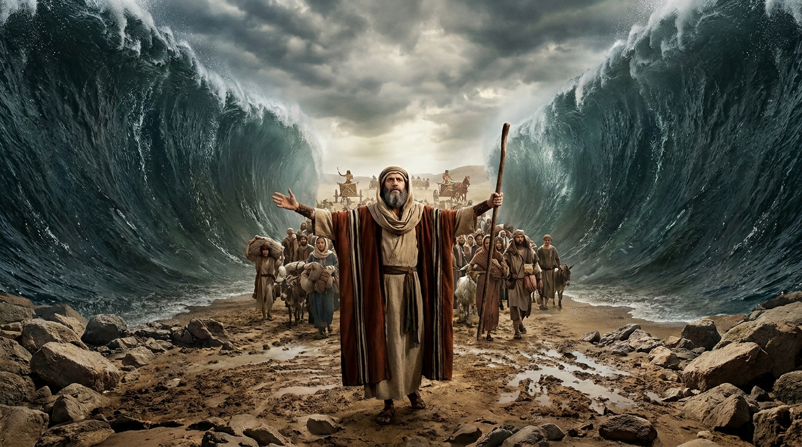

A Jornada para a Liberdade
O livro de Êxodo narra um dos eventos mais dramáticos e fundamentais de toda a Bíblia: a libertação miraculosa do povo de Israel da escravidão no Egito. É aqui que vemos o poder de Deus sobre os impérios humanos e o estabelecimento de uma aliança baseada na Lei.
Ficha Técnica
- Autor: Tradição atribui a Moisés
- Data Aproximada: Entre 1440 e 1400 a.C.
- Tema Principal: Libertação, Redenção e a Lei de Deus
- Versículo-Chave: "Eu sou o Senhor, o teu Deus, que te tirou do Egito, da terra da escravidão." (Êxodo 20:2)
Estrutura do Livro
- A Escravidão no Egito e o chamado de Moisés (Caps. 1-4)
- As Dez Pragas e a primeira Páscoa (Caps. 5-13)
- A Travessia do Mar Vermelho e a jornada no deserto (Caps. 14-18)
- A Entrega da Lei e os Dez Mandamentos no Monte Sinai (Caps. 19-24)
- A Construção do Tabernáculo e o bezerro de ouro (Caps. 25-40)
Deseja ler o texto completo com todas as traduções disponíveis?
📖 Ler Livro de Êxodo